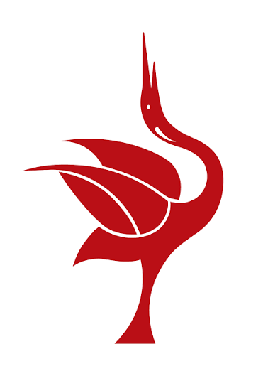

Publico objetivo
La página web estará dirigida a estudiantes universitarios y jóvenes de la comunidad. El lenguaje será claro, directo, visual e informal para mantener el interés de este grupo de edad y motivar acciones concretas de cambio.

Concientizar y educar a los jóvenes de la comunidad sobre la separación adecuada de residuos mediante un sitio web intuitivo e informativo para ayudar a la reducción de la huella ecológica.
La página web estará dirigida a estudiantes universitarios y jóvenes de la comunidad. El lenguaje será claro, directo, visual e informal para mantener el interés de este grupo de edad y motivar acciones concretas de cambio.
La acumulación inadecuada de residuos sólidos representa un problema ambiental grave que impacta la salud pública y los ecosistemas locales. Se eligió el tema porque existe un desconocimiento generalizado sobre cómo clasificar y reducir la basura en la vida cotidiana.